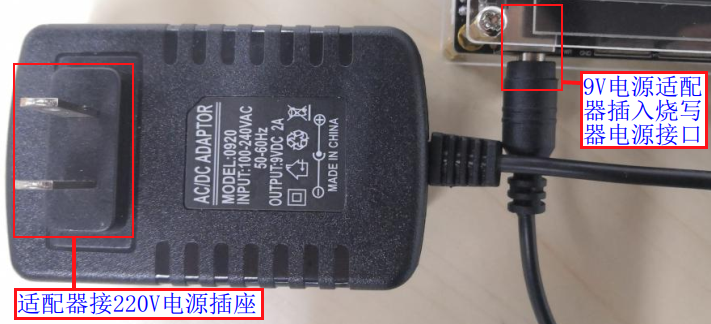
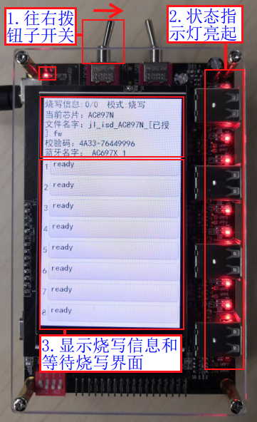
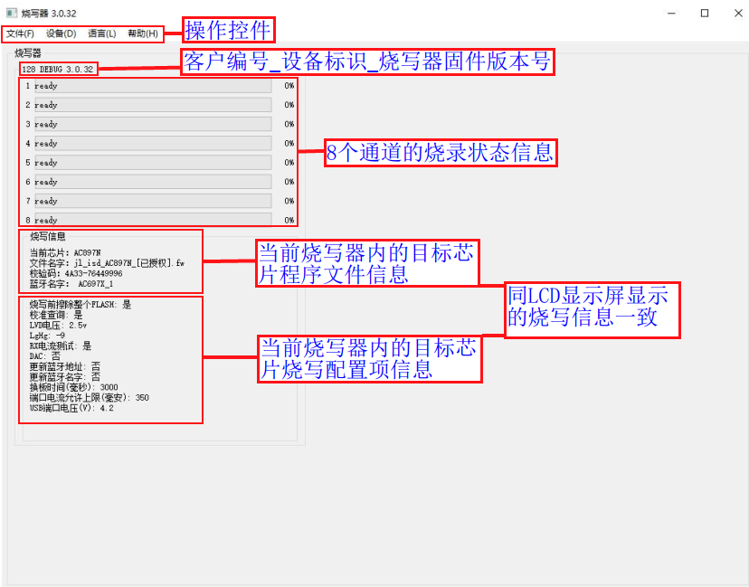
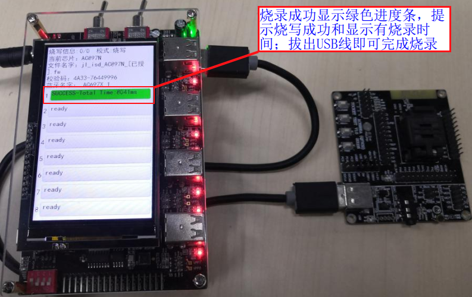

2.2. 手动烧录、校验、查空芯片操作流程
2.2.1. 烧录环境准备
烧录需要准备的物料清单：
类别 |
说明 |
数量 |
|---|---|---|
PC计算机 |
1. 用于升级烧录器固件，升级到需要的固件版本或最新版本 |
N 台 |
烧录器主机 |
用于控制烧录芯片 |
1台 |
USB数据线 |
1.用于烧录器和PC计算机连接，升级烧录器固件 |
N条 |
电源适配器 |
请使用9.0V、2.0A以上规格电源，给烧写器供电 |
1个 |
治具 |
用于配合N个烧录器N*8个样机同时实现批量烧录 |
1个 |
样机 |
1.可以烧录单个样机，开发板； |
N个 |
待烧录的芯片程序 |
准备要烧录sdk编译生成的fw文件（包含了key文件）； |
1个 |
2.2.2. 烧录器上电开机
烧录器供电
烧录器使用9V电源适配器进行供电，电源接线如烧录器供电接线图所示所示。

烧录器供电接线图
烧录器上电开机
烧录器出厂前已烧录有控制烧录器工作的固件程序，拿到烧录器后即可上电开机。烧录器供电后操作步骤如上电开机界面所示，
【1】拨动“控制总电源的钮子开关”，往右拨为开，左为关；
【2】上电后，“电源指示灯”和“8个烧录通道状态指示灯”亮起；
【3】LCD显示屏显示3S“开机界面”后显示“烧录信息”和“等待烧录界面”；

上电开机界面
2.2.3. 烧录器固件版本确认及更新
烧录器固件指控制整个烧录器工作的主控芯片固件程序，烧录目标芯片程序前务必确认当前烧录器固件版本是否是最新（特殊情况除外），否则可能出现一些烧录问题。
2.2.4. 更新目标芯片程序到烧录器
2.2.4.1. 更新说明
芯片烧录、校验、查空程序前，需要更新目标芯片对应的烧录程序即SDK编译生成的fw文件、ufw文件，或key文件到烧录器，烧录过程烧录器会把程序烧录到目标芯片，或利用程序进行校验和查空。 如果烧录器已经更新过对应的程序，请跳过以下小节的操作步骤。
2.2.4.2. 打开PC端控制界面
在烧录器上电开机后，按如打开PC端控制界面所示进行操作，
【1】使用USB数据线进行
烧录器更新程序用的USB接口和PC端的USB接口连接（注意烧录器端插入的是更新程序用的USB接口，而不是烧录用的8路USB接口）；【2】打开PC端
此电脑，看到CD驱动器光驱；【3】鼠标右键打开“CD驱动器”光驱，会看到
burner.exe文件和使用手册等文件；【4】双击
burner.exe，出现如PC端控制界面所示PC端控制界面（也可在第4步直接鼠标左键双击“CD驱动器”打开）；

打开PC端控制界面

PC端控制界面
Important
一定要在上电开机后，再使用USB线进行“烧录器和PC端连接”进行程序更新，如直接使用USB进行程序更新，可能USB供电能力过弱导致更新失败。
2.2.4.3. 选择要烧录的目标芯片型号
这里对AC897N芯片进行fw烧录文件更新演示，在打开PC端控制界面后，进行操作：
【1】点击“文件”->“部署”,出现如目标芯片型号选择界面所示目标芯片型号选择界面；
【2】点击对应的芯片型号，这里点击AC897N,出现如部署fw烧录文件到烧录器所示部署程序界面。

目标芯片型号选择界面
2.2.4.4. 选择并部署烧录文件到烧录器
打开部署程序界面后按如部署fw烧录文件到烧录器所示的步骤进行操作：
【1】点击打开并选择需要部署的已授权的fw文件（ufw文件、key文件也可,fw/ufw文件必须授权才能通过一拖八烧录器烧录，可参考《授权烧录次数限制功能》章节内容，了解此功能并对fw文件进行授权）
【2】选择芯片烧录配置项（一般默认，可参考《各型号芯片PC端烧录配置项介绍》章节内容根据需求进行配置）；
【3】点击“部署”按钮，部署FW文件即目标芯片烧录程序到烧录器；
【4】部署成功后，有“部署烧录器成功，请重新上电”提示，点击OK后请对烧录器重新上电（拔出烧录器端的USB数据线，并拨动“控制总电源的钮子开关”，往左拨关电源，再右拨开电源）；

部署fw烧录文件到烧录器
Note
fw/ufw文件必须授权才能通过一拖八烧录器烧录
如部署时出现报错 “错误：FW文件中没有授权信息…”,请参考《授权烧录次数限制功能》章节内容对fw文件进行授权）
如果部署出现其他失败，也会有对应的错误信息提示，根据提示找错误原因再重新部署，如反复部署失败，有解决不了的问题，及时联系杰理技术支持。
2.2.5. 烧录器工作模式介绍与设置
2.2.5.1. 烧录器工作模式介绍
工作模式 |
模式介绍 |
|---|---|
烧录模式 |
把部署到烧录器的程序文件即SDK编译生成的.fw、.ufw文件，或.key文件 |
校验模式 |
把部署到烧录器的程序文件即SDK编译生成的.fw、.ufw文件，或.key文件及lvd, |
查空模式 |
检查芯片是否是空片，即是否已经烧录过.fw文件程序、key文件数据； |
电流测试模式 |
测试待机，关机等模式下样机消耗的电流 |
Note
对于
烧录模式，已经包含了校验功能，烧录到芯片的任何数据，执行烧录后都会读取校验是否烧录正确;
对于
查空模式，即使显示了.fw文件的校验码，但是不能证明芯片烧录程序是完整的；查空显示校验码主要用于找回上次烧录的.fw文件，方便管理烧录文件，如用找回的.fw文件进行生产烧录不良分析；
要二次确认芯片上次烧录的程序是否完整，同当前部署的.fw文件数据、烧录配置是否一致，必须使用
校验模式；
2.2.5.2. 烧录器工作模式设置与确认
2.2.6. 样机芯片程序烧录
2.2.6.1. 烧录准备工作
烧录样机芯片程序前，确保执行了前4小节的相关操作，以防烧录过程出现一些异常问题，包括：
烧录前上电开机，进入准备烧录显示界面（请参考《烧录器上电开机》小节）
确认或更新当前烧录器固件版本为需要的版本（请参考《烧录器固件版本确认及更新》小节，可不定时确认）
确认或更新当前烧录器内的目标芯片程序为要烧录的程序（请参考《更新目标芯片程序到烧录器》小节）
确认或设置当前烧录器工作模式为烧录模式（请参考《烧录器工作模式介绍与设置》小节）
准备好待烧录并已经引出USB接口的样机，或量产样机及专用治具。
2.2.6.2. 样机芯片开始烧录
烧录准备工作做好后，可对烧录器重新上电开机并打开控制USB电源的钮子开关，让烧录器显示界面处于准备烧录状态。
当烧录器检测到样机芯片的VBAT、DM、DP、GND引脚连接的USB公头接入USB烧录接口，即开始对当前通道的样机芯片进行程序烧录。
所以对样机进行烧录的方法有两种：
先打开控制USB电源的钮子开关，再让样机芯片的VBAT、DM、DP、GND引脚连接USB线公头插入烧录器烧录接口母头。烧录单个样机，或者量产时通过治具按压接触式烧录可使用这种方法。
先让样机芯片的VBAT、DM、DP、GND引脚连接USB线公头插入烧录器烧录接口母头，再打开控制USB电源的钮子开关。非量产且无治具需同时烧录多个样机时可使用这种方法。
使用方法1进行烧录，开始烧录图解如单个样机开始烧录步骤和治具开始烧录步骤所示。

单个样机开始烧录步骤

治具开始烧录步骤
Important
烧录治具可以扩展到同时下压接触Nx8个样机的USB测试点（VBAT、DM、DP、GND），实现使用N台烧录器对Nx8个样机芯片同时进行烧录程序。
2.2.6.3. 烧录结果判断
烧录成功判断
烧录成功后显示屏上对应的通道进度条部分
显示绿色，同时进度条内显示有烧录成功信息和烧录所用时间，这时拔出USB线即可完成烧录，如单个样机烧录成功显示和治具烧录成功所示。
单个样机烧录成功显示

治具烧录成功
烧录失败判断
烧录失败后显示屏上对应的通道进度条部分
显示红色，同时进度条内显示有烧录失败的报错信息，如烧录失败进度条状态所示（也可能是其它错误类型）。拔出USB线进度条显示屏恢复正常显示。
烧录失败进度条状态
Note
芯片烧录成功后即可取走PCBA板，进入下一步样机的组装或功能测试；同一颗芯片可以改变目标芯片程序，烧录配置项等进行反复多次烧录；
烧录失败的芯片不允许流入后续的生产环节，需要进一步分析具体烧录失败原因；
了解详细的状态指示和报错提示说明，请参考《状态指示和报错提示说明》章节。
2.2.7. 样机芯片程序校验
2.2.7.1. 校验准备工作
校验样机芯片程序前，确保执行了前4小节的相关操作，以防校验过程出现一些异常问题，包括：
烧录前上电开机，进入准备烧录显示界面（请参考《烧录器上电开机》小节）
确认或更新当前烧录器固件版本为需要的版本（请参考《烧录器固件版本确认及更新》小节，可不定时确认）
确认或更新当前烧录器内的目标芯片程序为要校验的程序（请参考《更新目标芯片程序到烧录器》小节）
确认或设置当前烧录器工作模式为校验模式（请参考《烧录器工作模式介绍与设置》小节）
准备好待校验并已经引出USB接口的样机
2.2.7.2. 样机芯片开始校验
校验准备工作做好后，可对烧录器重新上电开机并打开控制USB电源的钮子开关，让烧录器显示界面处于准备烧录状态。
当烧录器检测到样机芯片的VBAT、DM、DP、GND引脚连接的USB公头接入USB烧录接口，即开始对当前通道的样机芯片进行程序校验。 开始校验同《样机芯片开始烧录》的操作一致，可参考单个样机开始烧录步骤和治具开始烧录步骤。
2.2.7.3. 校验结果判断
2.2.8. 样机芯片程序查空
2.2.8.1. 查空准备工作
查空样机芯片程序前，确保执行了前4小节的相关操作，以防查空过程出现一些异常问题，包括：
烧录前上电开机，进入准备烧录显示界面（请参考《烧录器上电开机》小节）
确认或更新当前烧录器固件版本为需要的版本（请参考《烧录器固件版本确认及更新》小节，可不定时确认）
确认或更新当前烧录器内的目标芯片程序为对应芯片型号的程序（请参考《更新目标芯片程序到烧录器》小节）
确认或设置当前烧录器工作模式为查空模式（请参考《烧录器工作模式介绍与设置》小节）
准备好待查空并已经引出USB接口的样机
2.2.8.2. 样机芯片开始查空
查空准备工作做好后，可对烧录器重新上电开机并打开控制USB电源的钮子开关，让烧录器显示界面处于准备烧录状态。
当烧录器检测到样机芯片的VBAT、DM、DP、GND引脚连接的USB公头接入USB烧录接口，即开始对当前通道的样机芯片进行程序查空。 开始查空同《样机芯片开始烧录》的操作一致，可参考单个样机开始烧录步骤和治具开始烧录步骤。
2.2.8.3. 查空结果判断
查空成功判断
查空成功后显示屏上对应的通道进度条部分
显示绿色，同时进度条内显示有查空成功信息和查空所用时间,如查空成功进度条状态所示。 查空成功表示芯片为空片，没有烧录过程序数据，这时拔出USB线即可完成查空。
查空成功进度条状态
非空片判断
查空结果为非空片时显示屏上对应的通道进度条部分
显示红色，同时进度条内显示有非空片的提示信息，表示当前芯片为空片即没有烧录过fw文件和key文件， 如芯片非空进度条状态所示（V3.1.0及以上版本烧录器固件支持查空模式芯片非空片显示烧录器版本和fw文件校验码，请参考芯片非空显示烧录器版本号和程序校验码说明节）。拔出USB线进度条显示屏恢 复正常显示。芯片非空进度条状态
2.2.8.4. 芯片非空显示烧录器版本号和程序校验码说明
支持该功能的烧录器固件版本：V3.1.0及以上版本
用途
显示烧录器版本号：该版本号只烧录器控制烧录的固件程序版本号，仅用于让用户知道当前芯片程序是一拖二还是一拖八烧录器烧录以及用哪个版本烧录；不支持查找其它升级工具升级后芯片中程序校验码；
显示程序校验码：该校验码一般指fw烧录文件的u16+u32校验码，仅用于让用户知道当前芯片内的程序对应的fw文件的校验码是哪个，即用于找到芯片程序对应的fw文件；
显示说明
烧录器可以找到校验码或者烧录器版本，芯片非空片显示提示如芯片非空显示烧录器版本号和程序校验码所示，表示该芯片使用V3.1.2烧录器固件进行烧录（V3.X.X为一拖八烧录器，V2.X.X为一拖二烧录器），芯片程序数据对应的fw文件校验码为9667-1BC6325B；

芯片非空显示烧录器版本号和程序校验码
烧录器找不到烧录器版本号和程序校验码，芯片非空片显示提示如芯片非空进度条状态所示。不能显示版本号和校验码可能原因：1、芯片程序不完整；2、非一拖二和一拖八烧录器烧录，如测试盒或强制升级工具通过下载目录升级；